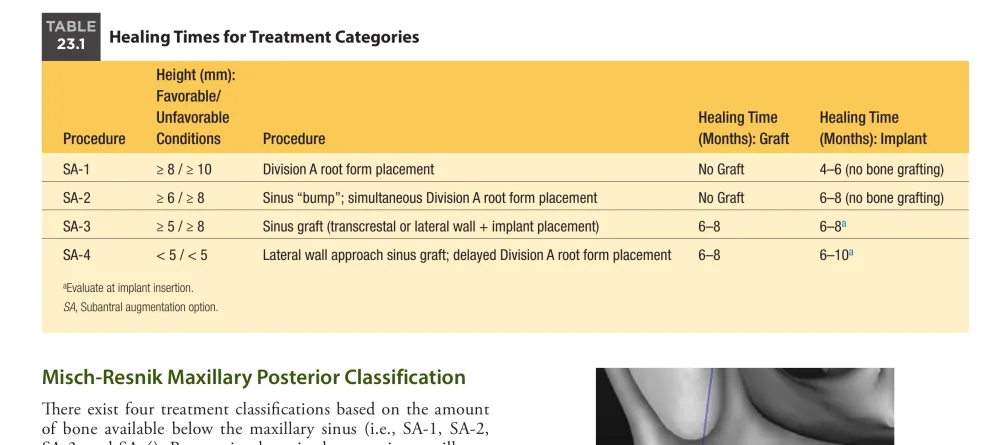
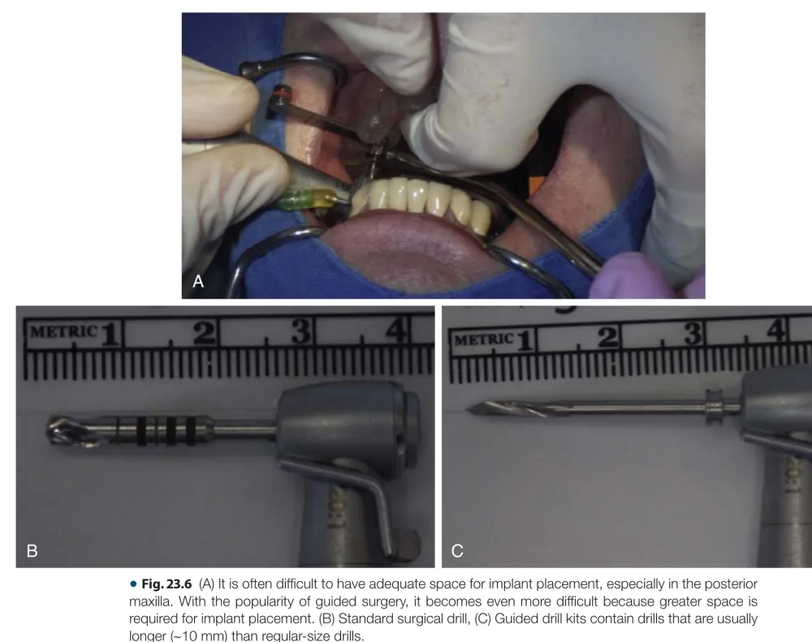

نسخه استخراجشده؛ ترجمه یا تأیید علمی انجام نشده است. وضعیت: captured
حالا که هر چهار گزینه را میشناسی، این جدول همه را کنار هم میگذارد.
SA-1 — ارتفاع ۸ میلیمتر یا بیشتر (مساعد)، ۱۰ میلیمتر یا بیشتر (نامساعد)
• روش: جایگذاری ایمپلنت ریشهای دیویژن A
• ترمیم گرافت: گرافتی در کار نیست
• ترمیم ایمپلنت: ۴ تا ۶ ماه
SA-2 — ارتفاع ۶ میلیمتر یا بیشتر (مساعد)، ۸ میلیمتر یا بیشتر (نامساعد)
• روش: «بامپ» سینوس؛ جایگذاری همزمان ایمپلنت دیویژن A
• ترمیم گرافت: گرافتی در کار نیست
• ترمیم ایمپلنت: ۶ تا ۸ ماه
SA-3 — ارتفاع ۵ میلیمتر یا بیشتر (مساعد)، ۸ میلیمتر یا بیشتر (نامساعد)
• روش: گرافت سینوس (ترنسکرستال یا دیوارهی جانبی) بههمراه جایگذاری ایمپلنت
• ترمیم گرافت: ۶ تا ۸ ماه، ترمیم ایمپلنت: ۶ تا ۸ ماه
SA-4 — ارتفاع کمتر از ۵ میلیمتر (در هر دو شرایط)
• روش: گرافت سینوس با رویکرد دیوارهی جانبی؛ جایگذاری با تأخیر ایمپلنت ریشهای دیویژن A
• ترمیم گرافت: ۶ تا ۸ ماه، ترمیم ایمپلنت: ۶ تا ۱۰ ماه
و یک پانویس مهم برای SA-3 و SA-4: «در زمان جایگذاری ایمپلنت ارزیابی کن.» — یعنی زمان ترمیم ایمپلنت در این دو دسته، عددی پیشفرض نیست؛ بر پایهی آنچه هنگام ورود مجدد میبینی تعیین میشود.
و اکنون سه الگو در این جدول که ارزش دیدن دارند:
الگوی یکم — تنها SA-4 در هر دو شرایط یک عدد دارد.
در SA-1، SA-2 و SA-3، ستون «مساعد» و «نامساعد» دو عدد متفاوت دارند. ولی در SA-4 هر دو کمتر از ۵ است.
و منطقش روشن است: زیر ۵ میلیمتر، هیچ شرایط مساعدی نمیتواند جایگذاری همزمان را نجات دهد — چون این مقدار استخوان برای فیکساسیون محکم ایمپلنت کافی نیست. بیومکانیک تا جایی میتواند مرزها را جابهجا کند، ولی این مرز آناتومیک است.
الگوی دوم — عدد «۸ میلیمتر» سه بار ظاهر میشود، ولی هر بار معنای متفاوتی دارد:
• در SA-1 مساعد، ۸ میلیمتر یعنی میتوانی بدون هیچ کاری ایمپلنت بگذاری
• در SA-2 نامساعد، همان ۸ میلیمتر یعنی باید سینوس را کمی بالا ببری
• در SA-3 نامساعد، همان ۸ میلیمتر یعنی باید گرافت کنی
پس عدد بهتنهایی هیچ نمیگوید. باید بدانی در کدام ستون شرایط ایستادهای. و این همان درسی است که دربارهی ترکیب کلاس و دیویژن آموختی — یک عدد یکسان، در دو زمینه، دو معنا.
الگوی سوم — زمان ترمیم ایمپلنت از SA-1 به SA-4 بیشتر میشود:
۴ تا ۶ ← ۶ تا ۸ ← ۶ تا ۸ ← ۶ تا ۱۰ ماه
و برای SA-3 و SA-4، زمان گرافت (۶ تا ۸ ماه) هم به این افزوده میشود. یعنی در SA-4، ترمیم گرافت و ایمپلنت روی هم ۱۲ تا ۱۸ ماه طول میکشد — و مرحلهی پروتزی هنوز مانده است.
و این عدد را باید در نخستین جلسهی مشاوره به بیمار بگویی، نه پس از جراحی.
و یک نکتهی پایانی دربارهی آنچه هنگام ورود مجدد پیدا میکنی:
«فاصلهی زمانی برای باز کردن مرحلهی دوم و روشهای پروتزی پس از قرار دادن ایمپلنت، به تراکم استخوان در زمان جایگذاری مجدد ایمپلنت بستگی دارد.»
و آنچه معمولاً مییابی: «کرست ریج و کف آنترال اصلی ممکن است تنها استخوان کورتیکال ناحیه برای فیکساسیون ایمپلنت باشند. شایعترین تراکم استخوان مشاهدهشده D4 است، و اغلب نرمتر از خودِ ناحیه بهطور کلی.»
این جمله را با انتظارت مقایسه کن. ممکن است تصور کنی گرافت، استخوان محکمی میسازد. ولی شایعترین نتیجه D4 است — و حتی نرمتر از استخوان بومی آن ناحیه.
و عددش را پیشتر دیدی: پس از گرافت سینوس، تقریباً دو سوم بیماران استخوان D4 دارند.
و راهحل: «بارگذاری تدریجی پس از باز کردن، وقتی استخوان بهویژه نرم و کمتراکم است، مهمترین است.»
پس گرافت موفق، پایان کار نیست؛ آغاز یک پروتکل بارگذاری محتاطانه است.

پیش از پذیرفتن هر روشی، باید بدانی چقدر کار میکند. دادهها روشناند.
نتایج بلندمدت در بیش از ۱۵۰۰ افزایش سابآنترال، بیش از ۹۵ درصد گزارش شده است.
هزار و پانصد مورد، بیش از ۹۵ درصد. این یکی از بزرگترین سریهای گزارششده در کل این مسیر است.
و ادعای بزرگتر:
«روش گرافت سینوس قابل پیشبینیترین روش برای رشد ارتفاع استخوان از ۵ تا ۲۰ میلیمتر بوده است، در مقایسه با هر تکنیک دیگر گرافت استخوان داخلدهانی، با نرخ موفقیت گرافت و نرخ بقای ایمپلنت بیش از ۹۵ درصد.»
«از ۵ تا ۲۰ میلیمتر» — این بازه را با آنچه پیشتر آموختی مقایسه کن. دیدی که «افزایش استخوان در عرض قابل پیشبینیتر از ارتفاع است» و اینکه افزایش عرض بیش از ۳ میلیمتر به گرافت بلوک اتولوگ نیاز دارد.
پس گرافت سینوس یک استثنای بزرگ بر آن قاعده است — قابلپیشبینیترین روش داخلدهانی برای افزایش ارتفاع تا ۲۰ میلیمتر.
و دلیلش را میتوانی خودت بسازی: کف سینوس یک فضای محصور با چند دیوارهی استخوانی است — و «موفقیت مواد بازساختی با شمار دیوارههای استخوانی در تماس با مادهی گرافت همبستگی دارد.»
و اکنون تاریخچه — که نشان میدهد این روش چگونه به اینجا رسید:
اوایل دههی ۱۹۷۰ — ماگزیلای خلفی با استخوان دندهی اتوژن بهصورت اُنلی افزایش داده شد. و یک شکست آموزنده: «گرافتهای اُنلی زیر کرست آلوئولار موجود، ارتفاع بیندندانی خلفی را بهطور چشمگیری کاهش میدهند، ولی استخوان بسیار کمی برای ایمپلنتهای اندوستئال به دست میآید.»
یعنی گرافت اُنلی، فضای پروتزی را میخورد بیآنکه استخوان مفیدی بدهد.
۱۹۷۴ — روش کالدولـلوک اصلاحشده برای بالا بردن غشای سینوس و افزایش سابآنترال توسعه یافت. (روش اصلی، دسترسی به سینوس از راه پنجرهی جانبی، در ۱۸۹۳ شرح داده شده بود.)
و پروتکل اولیه: کرست ماگزیلا شکسته و برای بالا بردن غشا استفاده میشد، استخوان اتوژن افزوده میشد، «ایمپلنتها پس از تقریباً ۶ ماه وارد میشدند و سپس با پروتز نهایی پس از ۶ ماه دیگر بارگذاری میشدند.»
۶ ماه بهعلاوهی ۶ ماه — و این همان بازهای است که هنوز در زمانهای ترمیم SA-3 و SA-4 میبینی.
۱۹۷۵ — رویکرد جانبی توسعه یافت که بالا بردن غشا و جایگذاری ایمپلنت را در یک جلسه ممکن کرد — یعنی خودِ مفهوم SA-3.
۱۹۸۱ — ایمپلنت تیتانیومی مدفون برای ماگزیلای خلفی معرفی شد. و «مزایای ترمیم مدفون، استفاده از تیتانیوم بهجای اکسید آلومینیوم، بیومکانیک بهبودیافته و تکنیک جراحی بهبودیافته، این روش را قابل پیشبینیتر کرد.»
۱۹۸۷ — میش رویکرد درمانی را بر پایهی مقدار استخوان زیر آنتروم سازمان داد. ۱۹۸۹ آن را گسترش داد تا عرض استخوان موجود را هم در بر بگیرد.
۱۹۹۵ — میش بُعد جانبی حفرهی سینوس را افزود، چون سینوسهای باریکتر سریعتر استخوان میسازند.
۲۰۱۷ — رزنیک طبقهبندی را اصلاح کرد تا «تکنیکهای افزایش متفاوت و استفاده از ایمپلنتهای کوتاه با توجه به عوامل نیروی موجود» را در بر بگیرد.
و همین آخرین اصلاح است که «شرایط مساعد و نامساعد» را وارد طبقهبندی کرد — یعنی همان چیزی که در درس دوم دیدی و طبقهبندی را از آناتومیک صرف به آناتومیکـبیومکانیکی تبدیل کرد.
و در پایان، گزینههایی که سینوس را دور میزنند:
چهار جایگزین وجود دارد: «استفاده از ایمپلنتهای کوتاهتر، جایگذاری ایمپلنتها برای اجتناب از سینوس، ایمپلنتهای زیگوماتیک، و ایمپلنتهای صفحهی پتریگویید.»
و تکنیک استئوتوم (۱۹۹۴) هم بهعنوان «یک تکنیک جایگزین و کمتهاجمتر» شناخته میشود — همان که در SA-2 دیدی.
پس دستگاه سابآنترال یک راه اجباری نیست؛ یک چارچوب تصمیم است. و هرچه به SA-4 نزدیکتر میشوی، ارزیابی این جایگزینها منطقیتر میشود — بهویژه ایمپلنت کوتاه — به این شرط که یادت باشد در استخوان D4 و ناحیهی گرافتشده، طول برای ثبات اولیه دوباره اهمیت پیدا میکند.
